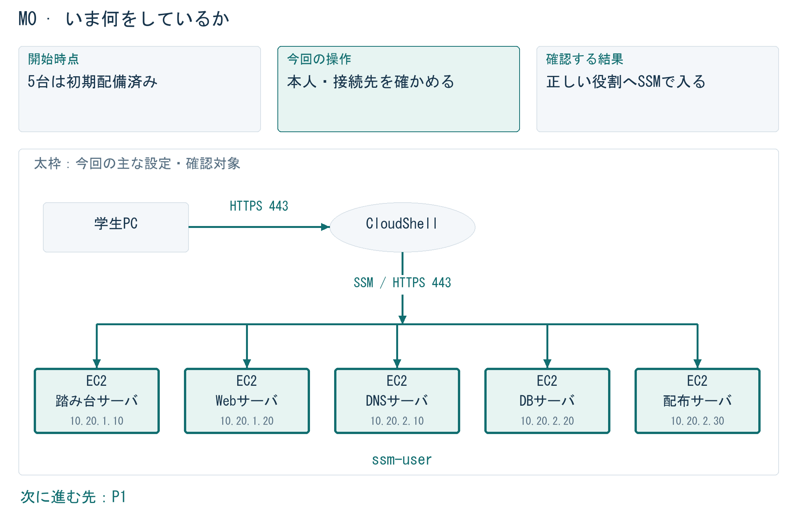

M0 自分の環境と実行場所 (0)
2026-11-13 · D12 P/M r1.5
配布版の有効期限：2027年1月31日末（UZT）。
対応する詳しい練習はP0。
完成要件
自分の5役割・元instance・SSM/内部SSH・本人登録の対応を確認する。構築点は0。P0を参照し、提供済み基盤を再作成しない。
今回の見取り図

図の太枠が今回の主な対象です。設定操作は各手順の実行場所で行い、図の矢印は接続・確認の向きを表します。 SGの通信許可は初期配備済みで、今回の課題はサーバー内の設定です。 SSMの矢印はAWSの接続管理を使う経路で、EC2の443番受信を開く指示ではありません。 図を参考に完成要件から設定値を自分で決めます。


確認・提出
- 教師から案内された課題画面に学校のGoogleアカウントでログインし、自分のLabと M0 を選ぶ。
- 「この課題を確認する」を押す。
- 処理中は「結果を更新する」で完了を待ち、課題ID・時刻・各check・保存状態を読む。結果は自動保存され、Mの成績は「保存済み成績を見る」で確認できる。PとM0は成績外。